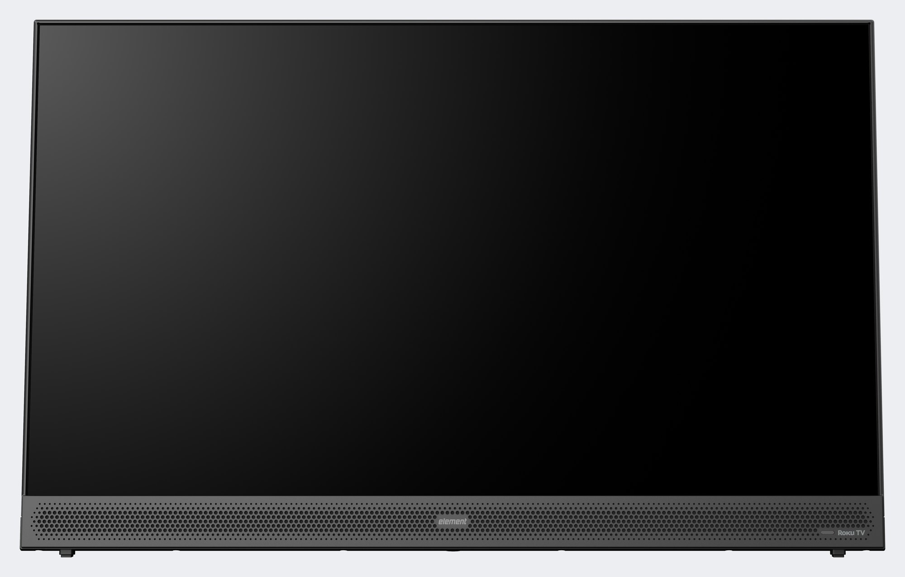
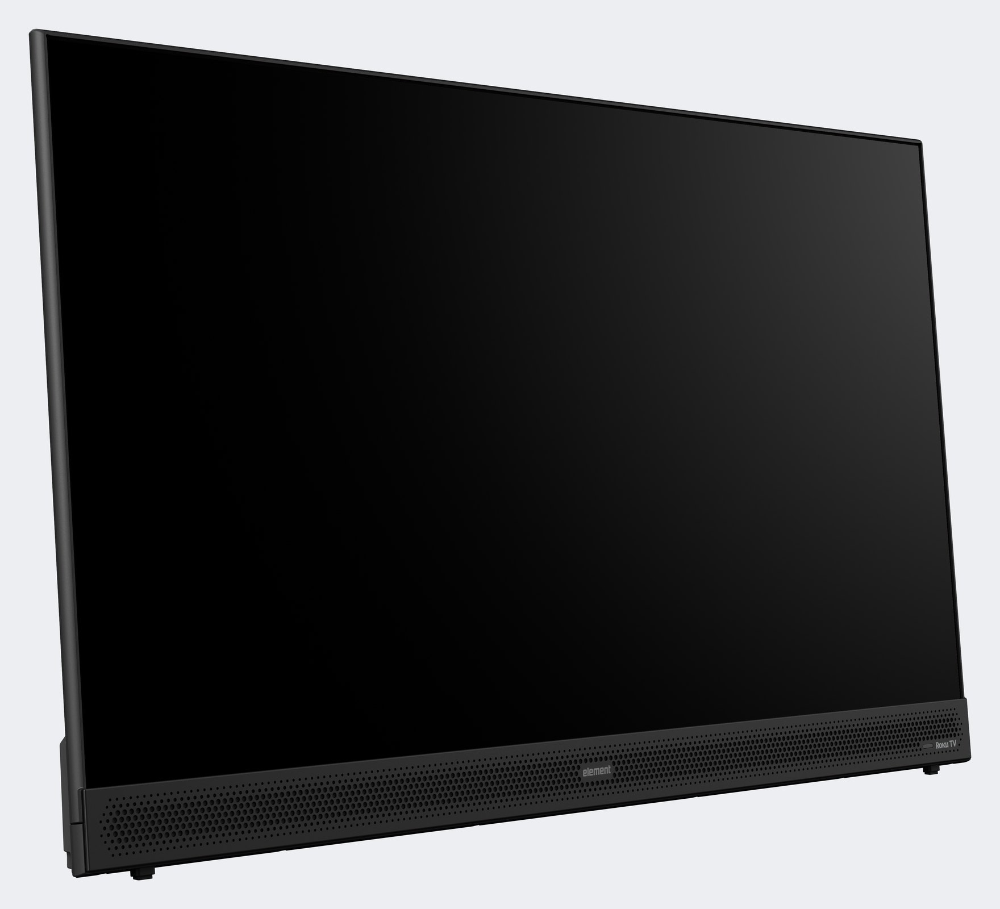
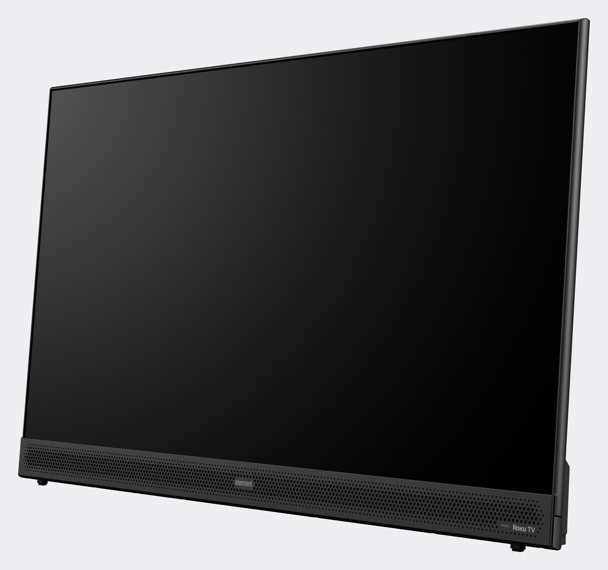
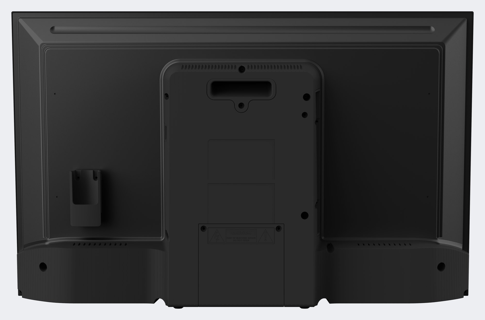
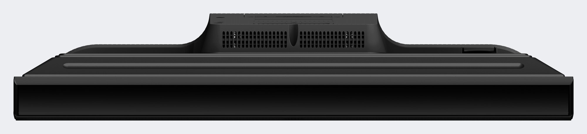
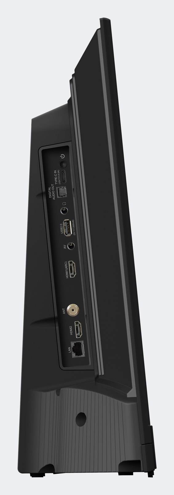
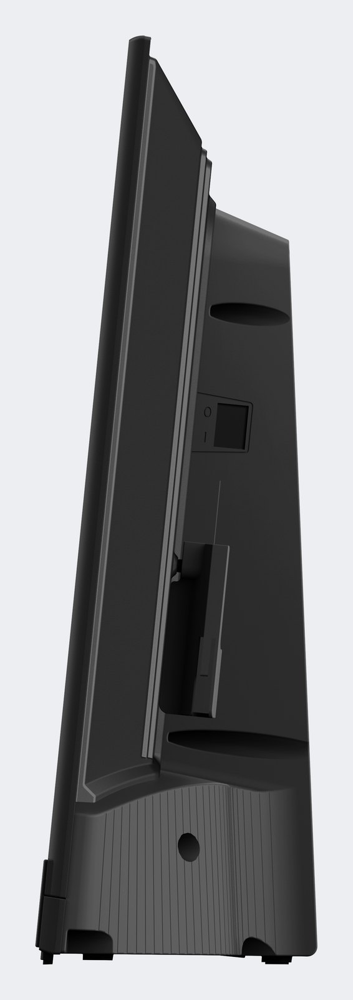

SKU: E300AG32PBRPrefix: E300AG32PBR_Assets: 1 (TV, screen off)Size: 28.5 × 17.9 × 5.5 in (W × H × D)Due: TBDCONFIRM
Create a 3D model, in one colorway (black), of the Element 32" Portable TV using the provided reference images and specs. The model must be true to size, because it will be viewed in 3D and in AR. A CAD file is not available as a starting point.
| Overall size | 724 × 455 × 140 mm (28.5 × 17.9 × 5.5 in, W × H × D), from Element. Treat this as the outer box of the whole product standing on its feet, including the speaker bar base and the rear module.CONFIRM whether 5.5 in is measured at the base |
|---|---|
| Screen | 32" class, 16:9, 1080p. Active area about 697 × 392 mm (31.5 in diagonal). Thin dark bezel, about 5 mm, on three sides; the bottom edge meets the speaker bar. |
| Stance | Portable: no stand. The TV sits on its speaker bar base and leans back about 6 degrees. Four rubber feet: two small pads at the front corners (about 40 mm in from each side) and two round feet under the rear module at the back. See Side_Left and Side_Right. |
| Measured from the renders | These come from measuring the renders against the 724 × 455 box, so treat them as close, not exact. Screen face leans back about 6 degrees (top edge sits about 46 mm behind the bottom). Speaker bar front face about 55 mm tall from the floor, standing about 2 mm proud of the screen plane; perforated band about 30 mm tall within it. Rear shell: a raised central plateau about 610 mm wide and 90 mm deep from the front plane, with a sloped frame about 60 mm wide down to the outer edge, and a recessed band across the bottom 100 mm. Rear module: about 243 mm wide, full depth 140 mm at the floor tapering to about 125 mm at 350 mm up, then a wider collar (about 290 mm) that curves into the shell by about 385 mm up. |
| Front | Full-width perforated speaker grille strip below the screen, with the element wordmark centered, a status LED and Roku TV mark at the right end. |
| Back | Rear shell with a raised central plateau, a sloped frame around it, and a recessed band across the bottom. In the middle sits a raised module (a wedge in side view) that holds the battery and electronics. On the module: a recessed handle slot at the top, six mounting holes of mixed sizes (not a standard VESA pattern; model what you see), two faint rectangular service panels, a caution label at the bottom, and slot vents along the top. On the shell to the left of the module (as you look at the back): a bracketCONFIRM what the bracket is (remote holder?). The lower band has one round port near each end, about 16 mm across. |
| Left side (viewer's left when facing the screen) | Recessed port panel, top to bottom: power button, USB-C IN (12 V), DIGITAL AUDIO OUT (optical), headphone 3.5 mm, USB 2.0, AV 3.5 mm, HDMI 1 (ARC), ANT (coax), HDMI 2, LAN (RJ45). All labels are printed on the panel; read them from Side_Left. |
| Top | Slot vents across the top of the rear module and a long shallow groove along the top edge of the rear shell.CONFIRM: is the groove the carry handle grip? |
| Bottom | No bottom view was supplied. Model a flat base with the four feet and keep it simple. The front corners of the base are rounded in plan (roughly 40 mm radius, visible in Top).CONFIRM: bottom photo requested |
| Scale check | Width 724 mm edge to edge across the speaker bar; height 455 mm from the bottom of the feet to the top edge of the bezel. If the screen is not about 697 mm wide inside the bezel, the scale is wrong. |
Source: the manufacturer's product information (Oct 28, 2026) and the 7 renders below. A dimensioned spec sheet has been requested and will be added here if it exists.CONFIRM Anything marked CONFIRM is being checked; build to the renders until you hear otherwise.
Seven manufacturer renders from Element, 8000 × 4500 px transparent PNG. Click any image for the full-resolution original. The files are Element's property for this job only: do not post or share them.







Separate objects, named exactly as below. Keep it to about 20 objects; small repeated details (feet, bolt bosses) can be one object each.
| Object name | What it is | Material | Detail |
|---|---|---|---|
E300AG32PBR_SCREEN | Display glass, slightly inset in the bezel. One flat quad is fine. | MAT_SCREEN_GLASS | Full |
E300AG32PBR_BEZEL | Front frame around the screen, three sides, with the small chamfer seen in the angled views | MAT_PLASTIC_BLACK_MATTE | Full |
E300AG32PBR_REAR_SHELL | Back cover of the panel: raised central plateau, sloped frame to the edges, recessed lower band with the two round ports, and the groove along the top edge | MAT_PLASTIC_BLACK_MATTE | Normal |
E300AG32PBR_REAR_MODULE | Raised wedge on the back, flaring into a wider collar at the top that blends into the shell: handle slot, six mounting holes, two faint service-panel recesses, slot vents along the top | MAT_PLASTIC_BLACK_MATTE | Full |
E300AG32PBR_SPEAKER_BAR | Base housing below the screen, full width and full depth, front corners rounded in plan, leaning with the screen | MAT_PLASTIC_BLACK_MATTE | Full |
E300AG32PBR_GRILLE | Perforated front face of the speaker bar. Texture the holes (normal + roughness, or an opacity map over a dark backing), do not model thousands of holes. | MAT_GRILLE_PERFORATED | Full |
E300AG32PBR_LOGO_ELEMENT | element wordmark, centered on the grille. Decal plane or printed into the grille texture. | MAT_PRINT_LIGHT_GRAY | Full |
E300AG32PBR_LOGO_ROKU | Roku TV mark at the right end of the grille, with the status LED next to it | MAT_PRINT_LIGHT_GRAY | Normal |
E300AG32PBR_LED | Small status indicator next to the Roku mark | MAT_LED_OFF | Simple |
E300AG32PBR_FEET | Four rubber feet: two small pads at the front corners, two round feet under the rear module (one object, all feet) | MAT_RUBBER_BLACK | Simple |
E300AG32PBR_PORT_PANEL | Recessed panel on the left side with printed labels | MAT_PLASTIC_BLACK_MATTE + label texture | Full |
E300AG32PBR_PORTS | The 10 connectors: power button, USB-C, optical, 3.5 mm × 2, USB-A, HDMI × 2, coax, RJ45. Simple shapes with the right colors (HDMI and USB silver, coax brass, USB-A insert white or black, RJ45 black). | MAT_METAL_CONNECTOR, MAT_PLASTIC_BLACK_MATTE | Normal |
E300AG32PBR_BRACKET | Bracket on the shell, left of the module as you look at the back: about 50 × 100 mm, open-top pocket, two screwsCONFIRM what it holds | MAT_PLASTIC_BLACK_MATTE | Normal |
E300AG32PBR_LABEL_CAUTION | Caution label at the bottom of the rear module (decal) | MAT_LABEL | Simple |
Materials must use the PBR metallic/roughness workflow with 2K (2048 × 2048 px) textures; the grille may use 4K. Use a unique material for each part as listed in the table below, named exactly as shown. Each material needs its own UV layout, with the UV islands filling the full 0 to 1 UV space to make the most of the texture resolution. Scale the UVs so that logos, labels and other fine details get enough texel density to stay sharp and legible in the 3D viewer. Procedural shading is fine to author with, but everything must be baked to textures: the GLB is what the customer sees.
| Material | Look | Notes |
|---|---|---|
MAT_PLASTIC_BLACK_MATTE | Very dark gray, near black, fine texture, low gloss | Bezel, shells, speaker bar body. Read the exact tone from Back.png: it is dark gray, not pure black. |
MAT_SCREEN_GLASS | Black, glossy, slight reflection | Screen off. Roughness low, base color near black. No emission. |
MAT_GRILLE_PERFORATED | Dark gray metal with a regular hex-pattern perforation | Perforation in the texture (normal + roughness, optional opacity). Hole pitch from Front_Straight-On at full size. |
MAT_PRINT_LIGHT_GRAY | Light gray print | element and Roku TV marks. |
MAT_LED_OFF | Dark translucent lens | No emission in the base asset. |
MAT_RUBBER_BLACK | Matte black rubber | Feet. |
MAT_METAL_CONNECTOR | Brushed silver and brass | One material with a baked color map is fine for all connectors. |
MAT_LABEL | Printed label | Caution label and port-panel text. Rebuild legible text from the renders until Element sends art. |
E300AG32PBR_v1.glb. Meters, real-world size, standard glTF Y-up, no Draco or KTX compression, textures embedded, all objects and materials named as above.E300AG32PBR_ / MAT_ names above. Nothing called Cube, Plane or Material.001.